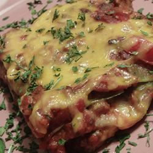

Lisa's Lasagne

A delicious version of the family favourite.
Its packed with vegetables so you know you and your
family are getting all the required nutrients
Follow the steps below to create your own tasty meal
Ingredients
- 2 tablespoons of olive oil
- 3 onions
- 1 green capsicum
- 1 yellow capsicum
- 2 zucchini
- 8 tomatoes
- 3 tablespoons tomato paste
- 4 cloves garlic
- 2 tablespoons dried thyme
- Salt and pepper to taste
- 2 tablespooons butter
- 1.5 tablespoons all-purpose flour
- 3 cups milk
- 1 cup shredded cheese
- freshly ground nutmeg
- 12 spinach lasagne noodles
Metod
- Heat the oil in a large saucepan. Add the onions and saute for 3 minutes.
Add the peppers and saute for 2 minutes. Add the zucchini and saute 3 minutes
before adding the tomatoes, tomato paste, garlic and oregano, basil, thyme, salt and pepper.
Cover the saucepan and simmer for 20 to 30 minutes (the longer the better as long as the sauce is not sticky.)
- Preheat the oven to 200 degrees F (95 degrees C). Grease a 9x13 inch baking dish.
- While the sauce cooks, melt 2 tablespoons butter in a saucepan. Add the flour into the butter, stir vigorously for 2 minutes.
Gradually add the milk, stirring until the sauce thickens. Stir in the cheese, reserving as much as you will want to sprinkle on top of the lasagna.
Stir the cheese into the flour and butter mixture until it has melted completely. Season with nutmeg, salt, and pepper.
- Soak the lasagna noodles in water for 30 seconds.
- Cover the bottom of the prepared dish with some of the tomato sauce, followed by a layer of the lasagna sheet, and the cheese sauce.
Continue layering these ingredients ending with a layer of cheese sauce. Sprinkle the final layer of cheese sauce with nutmeg, salt, pepper,
and the reserved cheese.
- Bake the lasagna 40 to 50 minutes, until the top of the lasagna is golden brown.